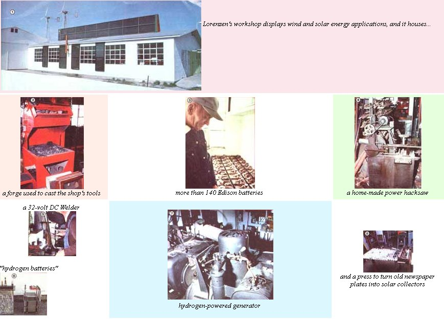

When John Lorenzen retired from farming a few years ago, hedidn't indulge himself in the usual "rewards" associated withreaching a ripe old age. Instead of moving from Iowa to sunnyFlorida - or spending days full of idle hours dangling afishing line in some pond - John took the opportunity todevote himself, full time, to experiments in his backyardworkshop.
Mr. Lorenzen is the sort of person who is driven to do thingsfor himself. As a result of that drive, the central Iowa farmerhas - over the last 40 years - built himself a workroom that would rival many a fully equipped machine shop.Starting with a few basic components, the resourceful scroungerhas made his own lathe, drill press, forge, steam cleaner, powerhacksaw, press, sheet metal bender, 32-volt welder . . . and onand on.
ALL ELECTRIC LIVING
. . . WITHOUT THE REA
The homemade tools have permitted John to maintain his ownfarming equipment and to provide for the majority of his family'senergy needs. For example, back in the 1930's - before theRural Electrification Administration's project came through hispart of the country - the ingenious Hawkeye Stater alreadyhad electricity . . . produced by a trio of Jacobs windplants.Consequently, when the REA folks did knock on the Lorenzens'front door, the response was, "No thanks, don't know what we'd dowith more electricity."
Despite the fact that he didn't need their power ,the arrival of the REA lines did prove to be a great boon to John. . . since he took the opportunity to follow in the powerlinepeople's tracks, picking up suddenly "old-fashioned" windplantsat close to giveaway prices. The three Jacobs 2.5-KW units thatnow serve the Lorenzen spread were all purchased in the latethirties for $20 apiece. Plus, there are enough spare parts- stashed in corners of the barn - for theultra-reliable wind spinners to keep them whirling forcenturies.
Of course, as anyone who's spent any time in the plains statesknows, the generally consistent flatland zephyrs tend to failonce a year . . . usually during the August hot spell. To getthrough such lean energy times, the 32-volt DC power produced bythe wind generators is stored in a bank of batteries. Mr.Lorenzen has been scavenging used forklift batteries for almost50 years, and his collection of the Edison cells - whichwork on an alkaline principle with an iron anode, a nickelicoxide cathode, and a potassium hydroxide electrolyte - nowtotals over 140 units of sixty-plus amperes apiece. Some of thebatteries are over 80 years old . . . yet it takes nothing morethan regular addition of water and a supplement of potash every15 years to keep them in good shape.
THE "SPARK" OF INVENTION
The batteries' total storage capacity of over 10 KW can supplythe Lorenzen household with power through about one week ofwindlessness, but during protracted lulls, John wasoriginally forced to resort to the use of a gasoline-poweredgenerator ... and such a reliance on nonrenewable fossil fuelswas a frustration to the self-sufficient sensibilities of theIowa inventor. However, the idea for a new method of energystorage came one day while he was filling his batteries.
Because Edison cells produce some hydrogen waste - as dostandard lead/acid batteries - there's always thepossibility of an explosion if proper precautions aren't taken.On the occasion in question, John was using a copper filler pipeto add water to the thirsty amp holders, and a spark between thebattery top and the copper tube ignited the explosive gas aroundthe filler hole. Fortunately, no damage was done . . . and theexperience led him to begin investigating the production ofhydrogen for fuel.
Mr. Lorenzen knew that there was often more electricityavailable from his windplants than he had use for. In fact, thethird Jacobs unit spent most of its time standing ready to backup the other two. So he decided to begin electrolyzing water toproduce hydrogen.
John's backyard workshop is strewn with the examples of hisprogressive development of better and better electrolyzingplates. When MOTHER's staff visited the impromptu laboratory,there was one generator in full operation . . . another veryclose to completion . . . and a redesign of the plates in theearly exploratory stages.
The device that's currently in use is fully automatic andis-to say the leastquite cleverly conceived. Lorenzen hasovercome the classic problem of separating the hydrogen andoxygen produced from the electrolysis of water by attachingplexiglass plates, angled in opposite directions, to the anodeand cathode of his generator. Hydrogen (which tends to bubblenear one plate) goes one direction, and oxygen (which is, inturn, released near the second conductor) rises toward the otherside of the container. A third plate, which divides theelectrolysis chamber in half, isolates the two elements.
As the hydrogen gradually builds up on one side of thedivider, the oxygen on the other side is vented into theatmosphere outside the shop. Thus the increasing pressure ofhydrogen forces the water level on the oxygen side higher andhigher. A ball float switch eventually kicks on a smallcompressor which pumps the Hz into a 100-pounds-persquare-inchtank. Numerous one-way valves are incorporated in all the hookupsto the hydrogen reservoir to prevent a backfire to the container.(One such accident - early in John's experimentation- blew the regulator right off his storage bottle! )
Though the hydrogen is now used to fuel the formerlygasoline-powered generator (with a little gas to facilitatestart-up), John plans to use his latest "hydrogen battery"- as he calls it - in an automobile. Along with acoinventor named Kenny Green, he hopes to take advantage of theseldom fully tapped potential of an auto's alternator to producehydrogen as a supplementary fuel.
CREATIVE SCROUNGING
However, such innovative technology has a tendency to eclipsethe other ingenious products of Mr. Lorenzen's apt mind andskilled hands. For example, the workshop where all the researchtakes place is about 90% solar-heated. John built the hot aircollection and storage system from - primarily -scrounged materials. The collectors. themselves employ a rippledmetal heatgathering surface made of discarded printing plates(from his local newspaper), which he bent on a handmadecreaser.
The four collectors on the southern wall of the structure workby convection alone, but the building-long collector that's setatop the roof's peak is served by a blower . . . which feeds thewarmed air into a rock storage area in the barn. Furthermore, allof the collectors - and the rock storage area - areinsulated with plain old sawdust.
Such elegantly simple solutions to technical problems are- to MOTHER's mind at least - the highlights of thisself-taught engineer's efforts. He builds electric drills fromold generators . . . inverts DC power to AC by inducing agenerator to function as a motor and thus spin an AC alternator .. . makes a battery charger from a string of light bulbs . . .and turns everyday junkyard candidates into useful pieces ofequipment.
But John Lorenzen's work doesn't stop at his front gate,either. He's also passing on his invaluable knowledge -gained through years of direct experience - by working withlocal schoolchildren on alternative energy projects. John's sortof practical know-how may well be the missing link (the one weall lament the loss of, but are hard pressed to replace), intoday's educational systems.
|
|
 |
|